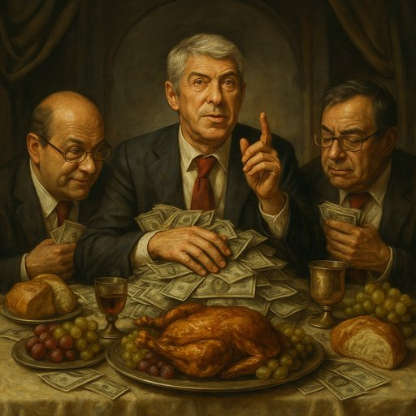

Publicado em 2025-07-05 15:57:00
Há ceias e há ceias. E depois há esta: a última, a derradeira, a definitiva. Não de Cristo com os apóstolos, mas de Sócrates com os acólitos da cleptocracia lusitana. Uma ceia que se prolongou por mais de uma década, com direito a vinhos caros, contas suíças, jantares secretos, obras públicas e... justiça pública adiada. Sim, a Operação Marquês chegou finalmente a julgamento, e com ela vêm à mesa os verdadeiros pratos principais: corrupção, branqueamento, tráfico de influências e o mais fino tempero do sistema — a impunidade dourada.
À cabeceira da mesa, José Sócrates, ex-primeiro-ministro, ex-socialista com garra revolucionária e agora... recorrente profissional. Mais de 100 recursos apresentados. Um recorde digno do Livro Guinness da Dissimulação. O homem que se diz perseguido, vítima de um sistema que, por ironia, ele próprio ajudou a edificar com betão, dívidas e promessas ocidentais.
À sua direita, o silencioso Carlos Santos Silva, o alegado testa-de-ferro, com 34 milhões suíços a arder-lhe no bolso — ou melhor, a aquecer o banco. À sua esquerda, os nomes sonantes da era dourada da promiscuidade: Ricardo Salgado, que terá distribuído 50 milhões como quem oferece pastéis de nata; Henrique Granadeiro e Zeinal Bava, homens das comunicações que, pelos vistos, ouviram apenas o som das moedas a tilintar.
E não esqueçamos Armando Vara, ex-banqueiro e ex-político, que terá também comungado deste sacramento da ganância. A última ceia não se serviu de pão e vinho, mas de offshore e dívida podre. E tudo isto num país onde os pobres estão mais pobres, a justiça mais lenta, e a moral pública em coma induzido.
A ceia não foi pintada por Da Vinci, mas podia ter sido: traços realistas, olhares esquivos, Judas em todos os cantos e um ar de santidade hipócrita pairando sobre o repasto. Portugal, espectador faminto, vê esta encenação tragicómica e pergunta-se: será desta que a justiça se levanta da mesa e dá a sobremesa merecida?
Mas cuidado, amigo leitor. Em terras lusas, a última ceia tem tendência para ser seguida de longos cafés, digestões lentas... e prescrições silenciosas. E, no fim, como sempre, a conta é nossa.
Artigo de Augustus Veritas o cronista do improvável de um país imaginário num cenario de Dante.
O País do ninguém sabia e ninguém viu (nada) [ ao sabor da melhor sátira política ]
Sentados à longa mesa da impunidade, brindam com champanhe suíço os apóstolos da corrupção. No lugar de pão e vinho, partilham malas de notas e contratos rasurados. Ao centro, José Sócrates, de toga invisível e ego inflado, ergue um copo à saúde da justiça lenta e dos prazos prescritos. À sua direita, Salgado sorri como um banqueiro em beatificação; à esquerda, Vara e Santos Silva trocam códigos de contas em murmúrios sacrosantos. Lá ao fundo, Bava e Granadeiro rezam para que ninguém encontre os rastos da dívida.
É a última ceia da moral, servida num país onde a ética foi crucificada há muito... e o povo ainda espera o milagre da justiça.